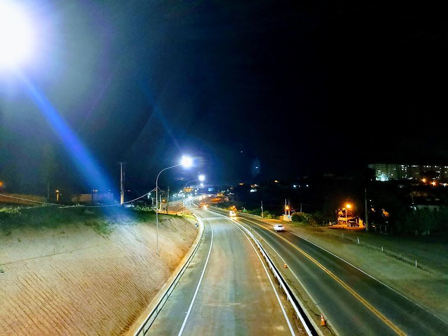
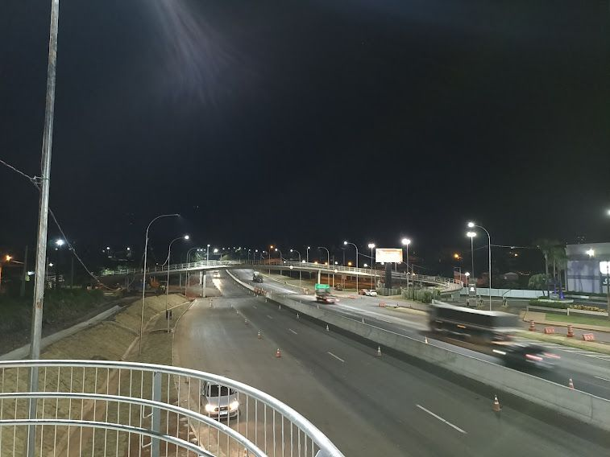
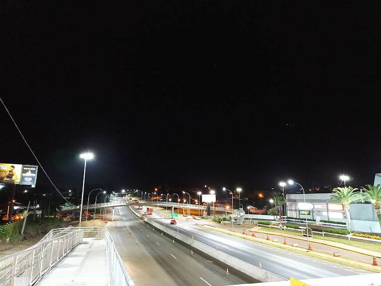

anos de trajetória
profissional
Engenharia elétrica · Gestão de projetos · Infraestrutura· Energia Fotovoltaica · Perícia
CREA-SP 5071367686
Eng° Carlos Eduardo Silva Portugal
Engenharia que transforma complexidade em resultado.
Engenheiro Eletricista Sênior com experiência em infraestrutura crítica, concessões rodoviárias, telecomunicações e energia.
Explorar entregas ↓CAPEX anual sob
gestão na CCR
km de rede de fibra
óptica entregues
de iluminação pública
modernizada
praças de pedágio
comissionadas
01Perfil profissional
Da engenharia à operação
Uma trajetória construída em campo, consolidada em projetos de grande escala.
Formado em Engenharia Elétrica pela PUC-Campinas e com MBA em Gestão de Empresas pela FGV, desenvolvi uma carreira que integra rigor técnico, disciplina de execução e visão de negócio.
Minha atuação evoluiu da base industrial e das redes de telecomunicações para a engenharia de infraestrutura, liderando interfaces entre projeto, contratos, fornecedores, obras, comissionamento e operação.
“
Da viabilidade à operação, engenharia com responsabilidade de ponta a ponta.
02Projetos em destaque
Escala, método e entrega
Resultados que permanecem em operação.
01
Grupo CCR · Unidade ViaSul · BR-386, Lajeado/RS
17+ km de iluminação viária entregues em um dos maiores desafios da minha carreira.
Conclusão da iluminação das Obras de Arte Especiais, da Faixa Adicional e da Duplicação da BR-386. O trabalho combinou meses de planejamento e dedicação para viabilizar a implantação de postes em solo rochoso tipo C e instalar mais de 1.100 luminárias LED em menos de 45 dias.
17+ km1.100+ luminárias LED< 45 diasSolo rochoso tipo C



02
CCR ViaCosteira · BR-101/SC
Implantação de Quatro praças de pedágio com a entrega de toda infraestrutura elétrica até o comissionamento:
P1 - Laguna: BR-101, km 298,6 (Laguna/SC)
P2 - Tubarão: BR-101, km 344,7 (Tubarão/SC)
P3 - Araranguá: BR-101, km 404,5 (Maracajá/SC)
P4 - São João do Sul: BR-101, km 457,5 (São João do Sul/SC)
P2 - Tubarão: BR-101, km 344,7 (Tubarão/SC)
P3 - Araranguá: BR-101, km 404,5 (Maracajá/SC)
P4 - São João do Sul: BR-101, km 457,5 (São João do Sul/SC)
P3 - Araranguá: BR-101, km 404,5 (Maracajá/SC)
P4 - São João do Sul: BR-101, km 457,5 (São João do Sul/SC)
P4 - São João do Sul: BR-101, km 457,5 (São João do Sul/SC)
Implantação e comissionamento de sistemas em BT/MT, iluminação, aterramento e integração eletromecânica, com aderência técnica, normativa e contratual para a entrega operacional da concessão.
BT/MTComissionamentoIntegração eletromecânica
03
CCR ViaCosteira e ViaSul
220 km de iluminação pública modernizada com 6.000+ luminárias LED.
Liderança de CAPEX, contratos, cronogramas, qualidade, segurança e múltiplas empresas contratadas em um programa de modernização de infraestrutura.
Eficiência energéticaCAPEXGestão de contratos
04
Algar Telecom · Campinas/SP
Mais de 1.000 km de redes de fibra óptica para clientes B2B e infraestrutura crítica.
Atuação da definição e design ao comissionamento, com gestão de fornecedores, interface regulatória e soluções de redundância para evolução de SLA.
Fibre opticsCritical infrastructureSLA
05
Portugal Engenharia Elétrica · Atual
Projetos elétricos e sistemas fotovoltaicos da viabilidade à entrega.
Responsabilidade técnica por soluções em BT/MT e energia solar on-grid, com estudos de viabilidade, documentação padronizada e interface com concessionárias.
Solar PVViabilidadeDocumentação técnica
03Experiência
Progressão profissional
Carreira orientada a sistemas que não podem parar.
2023 —
atual
atual
Engenheiro Eletricista Sênior
Portugal Engenharia Elétrica · Valinhos, SP
Projetos BT/MT, energia solar, implantação, comissionamento e responsabilidade técnica.
2020 —
2023
2023
Engenheiro de Campo → Analista de Engenharia III / Product Owner
CCR S.A. · SC e RS
Gestão de infraestrutura de iluminação, CAPEX, contratos, fornecedores e projetos greenfield/brownfield.
2018 —
2020
2020
Engenheiro Eletricista · Consultor Independente
Valinhos, SP
Projetos elétricos, cálculos de carga, especificações técnicas e laudos de conformidade.
2011 —
2018
2018
Estagiário → Analista de Pré-Vendas Pleno
Algar Telecom · Campinas, SP
Redes de fibra óptica, infraestrutura crítica, implantação, regulação e pré-vendas B2B.
2007 —
2011
2011
Técnico Eletricista Industrial
Eaton / Manserv (Unilever)
Instalações industriais BT/MT, montagem, inspeção e instrumentação básica.
04Competências e repertório
Capacidade de execução
Competência técnica conectada a entrega, gestão e operação.
Projetos & entrega
Gestão de Projetos, Planejamento e Controle, CAPEX, EPC, Cronogramas, Custos e Prazos, Comissionamento e Gestão de Riscos.
Engenharia elétrica
Sistemas BT/MT, Power Distribution, Electrical Design, Lighting Design, Earthing Systems, Load Calculations e Solar PV.
Interfaces críticas
Contratos, fornecedores, equipes multidisciplinares, concessionárias, órgãos públicos, normas técnicas e documentação de engenharia.
Ferramentas
AutoCAD · AutoCAD Electrical · DIALux evo · MS Project · SAP · Microsoft Office
Normas & conformidade
ABNT NBR 5410 · NBR 5101 · NBR 5181 · NBR 5419 · NR-10 · NR-35 · ANEEL · CREA-SP
—Formação
Base técnica e visão de gestão.
2019
MBA em Gestão de Empresas
Fundação Getulio Vargas — FGV2016
Bacharelado em Engenharia Elétrica
PUC-CampinasIdiomas